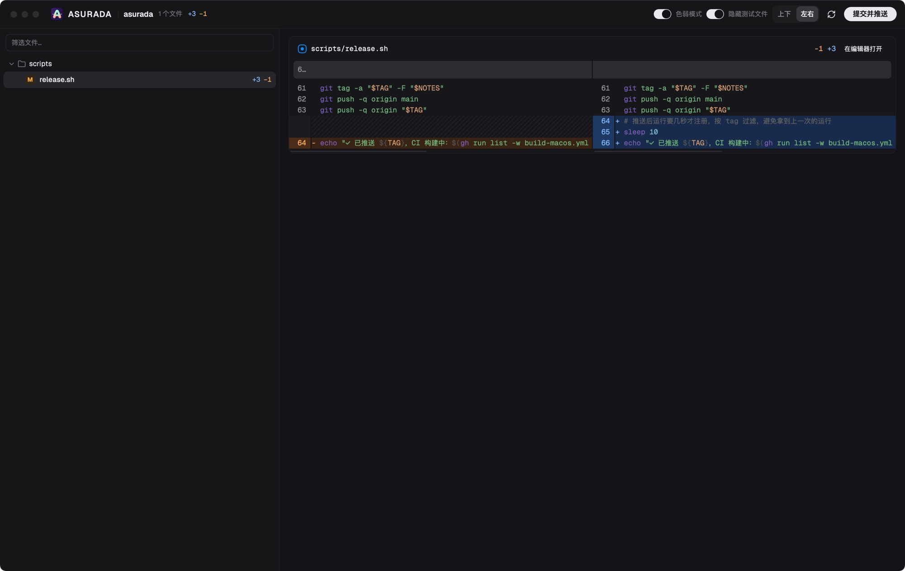

AI 写代码，
但你得看懂自己的项目
Review 不是因为不信任 AI，而是为了让「人」始终了解自己的项目，尤其是那些关键的地方。Asurada 的出发点是帮你滤掉噪音，提高你的 Review 效率，尤其是在多个项目之间穿插时，开发体验更加丝滑。


Review 不是因为不信任 AI，而是为了让「人」始终了解自己的项目，尤其是那些关键的地方。Asurada 的出发点是帮你滤掉噪音，提高你的 Review 效率，尤其是在多个项目之间穿插时，开发体验更加丝滑。
我们的出发点
Vibe Coding 让写代码快了十倍，可如果你不再看代码，项目就会慢慢变成一个你不认识的黑盒。出了问题时，你不知道该从哪里查；要做决定时，你不知道它现在长什么样。
更何况 AI 还会「自我加工」：悄悄塞进你预期之外的逻辑，比如过多的防御判断和兜底分支。今天看着无害，日后都会变成你理解代码的包袱。
Review，不是为了挑 AI 的错，
而是为了让你始终是最了解这个项目的人。
AI 一轮就能改几十个文件，逐行看完不现实，于是干脆不看。
测试、样板代码混在业务改动里，真正需要你把关的那几行反而被埋掉。
多个项目同时推进，AI 都在等你验收。每个项目的 Review 都该快进快出，别让「人」卡住整条流水线。
写提交信息、推送、处理冲突，Review 的专注力被一点点打散。
只看重点
一次改动里，真正需要你把关的往往只有那几个文件。Asurada 帮你把它们挑出来，其余的先收起，注意力只花在真正影响项目的地方。
怎么用
用你喜欢的 Agent 和编辑器
滤掉噪音，只看关键改动
提交信息自动生成
推送、冲突处理自动完成
功能
差异窗口就是你的 Review 台：变更按目录排开，噪音可以收起，重点逐行对比。

所有项目一屏看完，有改动的排在最前面。Review 完点一下，剩下的杂事交给 Asurada。
feat: 新增深色模式平时只在屏幕边缘露出一个小标签，有待提交的改动时会亮起提示。在任何应用里按快捷键都能呼出面板。
提交用的 diff 和 git 输出不进主对话，Agent 的上下文只留给核心工作。
有改动的项目自动排在最前，没改动的自动变灰，不用在项目之间翻找。
同步、重试、冲突撤回这些 Git 杂事自动处理，你的注意力只留给核心代码和业务逻辑。
平时只是屏幕边缘的小标签；按 ⌃E 呼出，Review 完就收起，不占你的屏幕和注意力。